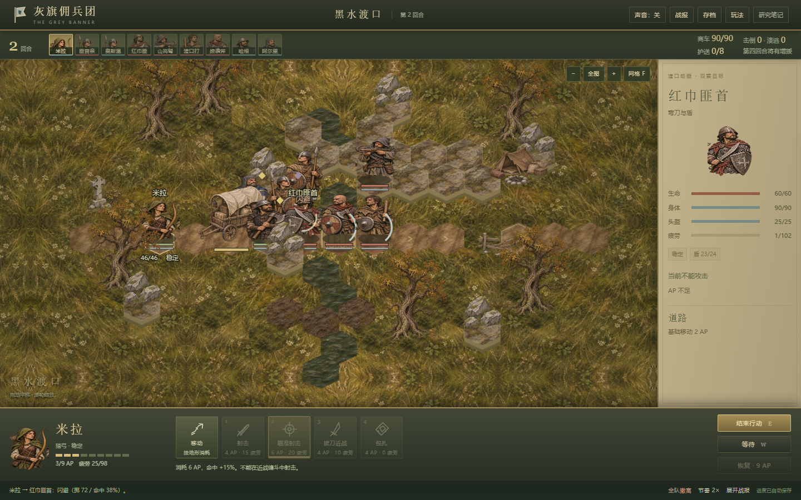

先选清核心体验
用同一套问题比较五种方向：玩家反复做什么选择，结果怎样反馈，又为什么愿意继续。后续设计先明确一条主循环，再判断辅助机制是否有必要。
五款作品 / 一次设计复盘
从原作的选择与反馈，
理解值得借鉴的东西。
把玩法、美术和玩家体验放在一起看，
再判断什么可以延伸成自己的设计。
这份研究对我们的意义
沉淀可以反复使用的问题与取舍，
帮助决定做什么、先验证什么、资源投在哪里。
用同一套问题比较五种方向：玩家反复做什么选择，结果怎样反馈，又为什么愿意继续。后续设计先明确一条主循环，再判断辅助机制是否有必要。
像素、手绘和半身棋子各有表达目的与制作代价。借鉴重点包括信息层级、辨识、状态变化和关键反馈，帮助把有限资源投入最影响体验的部分。
这轮样片说明了规则联动与运行流程，也暴露出卖点、反馈和持续动机不足。下一次先用短体验检验选择与反馈，再决定增加系统、素材和长期内容。
本页提供设计选型和复盘依据。扩展方向是待验证的设想，尚不能据此判断新项目的市场需求或商业前景。
玩法 / 美术 / 参考意义
选择一种体验，观察它的规则怎样配合。
扩展提案是我们的设想，尚未经过玩家验证。
卡牌构筑 × Roguelike
这一次拿到的牌，怎样组成能活下来的解？
有限能量与抽牌决定回合取舍，路线、卡牌和遗物决定整局成长。随机获得的资源不断要求玩家调整方案。
少量规则通过组合产生变化；重玩来自应对不同局面，而不是重复同一套操作。
精英、营火与普通战斗，让生命同时成为风险预算。
| 作品 | 决策发生在哪 | 为什么继续 | 主要投入 | 可以带走什么 |
|---|---|---|---|---|
| 杀戮尖塔 1 | 回合决策与整局成长 | 掌握规则，再试不同构筑 | 组合平衡与敌人设计 | 借鉴随机资源下的临场决策，以及让风险可读的信息设计。 |
| 星露谷物语 | 一天、季节与长期建设 | 自己的生活持续改变 | 日常内容、人物与状态素材 | 借鉴多层时间目标与持久改变，让玩家有自己的日程和生活。 |
| 暗黑地牢 | 每次行动与整段远征 | 损伤与恢复影响下次出发 | 风险反馈、战斗演出与节奏 | 借鉴多维损耗与可控撤退，让紧张感来自能判断、能准备的风险。 |
| 异星工厂 | 实时反馈与长期规划 | 结构不断扩张与改进 | 模拟规模、性能与信息可读性 | 借鉴可观察的因果链与瓶颈迁移，让优化结果能被直接感知。 |
| 战场兄弟 | 战场行动与持续经营 | 队员成长、经历与损失 | 战术、经济与人物系统联动 | 借鉴战术、经济与人物经历之间的联动，研究有限资源下的美术取舍。 |
从借鉴走向变化
保留一个有效的循环，改变一个关键条件。
每个方向都需要一个能被试玩回答的问题。
参考 杀戮尖塔 1
容易走偏牌越来越多，却只有一种明显最优的选择。
参考 星露谷物语
容易走偏把治愈理解成没有选择的重复劳动。
参考 暗黑地牢
容易走偏高损失却没有预警、准备和恢复空间。
参考 异星工厂
容易走偏只增加配方长度与操作量，没有新问题。
参考 战场兄弟
容易走偏只留下六角格和数值，缺少长期牵挂。
组合也需要取舍
系统能相接，不代表体验就相容。
用自动化减少重复劳动，把释放的时间交给邻里交往。需要验证效率追求会不会破坏生活节奏。
让牌组承担远征工具的角色，补给与撤退影响构筑。需要避免抽牌与压力同时带来失控感。
把外出任务的收获投入共同生活，让返程有具体意义。需要验证永久损失与温暖基调能否相容。
这轮制作留下的判断
我们先尝试了五个简化实验，随后集中制作一场佣兵战术任务。它们验证了部分规则能够联动，也暴露出画面反馈、独特卖点和持续投入理由不足的问题。
当前把它们作为机制研究记录保留。经典作品帮助我们理解设计，新的作品仍需回答：谁愿意玩、为什么选它、什么让人想再来一次。

原作资料与分析边界
原作特点和截图可在官方资料中对照；参考意义、美术作用、组合方向与验证问题为我们的设计分析。本文不把经典作品的成功直接当作新项目的市场依据。
整理日期 2026.11.21